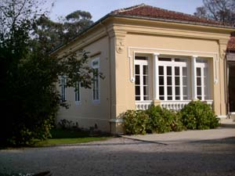
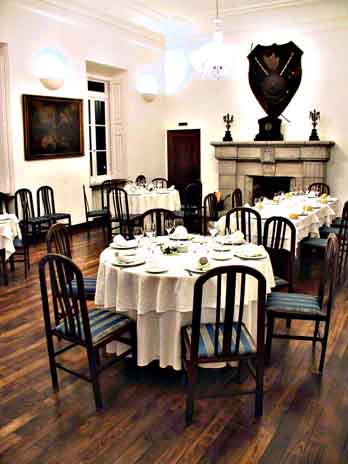
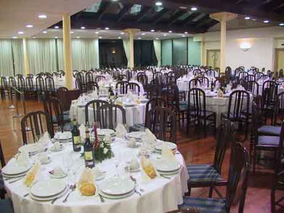
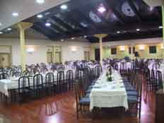
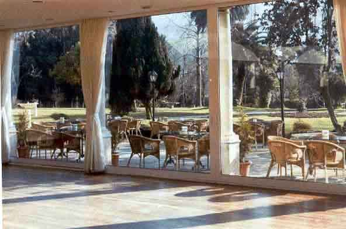
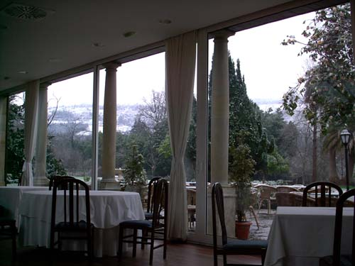

SALÓN COMEDOR



EXTERIOR INTERIOR
En el antiguo salón de música, originario del siglo XIX-XX se ha montado el comedor diario de carta donde se puede comer y cenar todos los días desde las 13h. En él todo tiene un sabor centenario, desde el antiguo suelo de castaño a los altísimos techos que conservan sus molduras originales, pasando por chimenea, panoplia de armas, cuadros, ventanas y puertas, todo se ha conservado y restaurado para evitar la inclusión de elementos "extraños" en la decoración del salón.
En tiempo de frío, Otoño e Invierno se puede disfrutar de una comida al calor del "hogar", que se enciende siempre los fines de semana y en las comidas de grupo por encargo.

SALÓN GRANDE

A partir de la galería de columnas que unían la casa con el salón de música, se ha construido el salón grande para bodas, comuniones, congresos, etc. Tiene 400 m2 y mediante unos biombos se puede modular para acomodarse a todo tipo de actos. El suelo es de madera y la mayor parte del techo está formada por dos enormes cristaleras que permiten ver el cielo todo el día y de noche se convierten en espejos por efecto de la luz. El frente es de cristal, puede ser abierto y de este modo acceder a la terraza contigua por una puerta de seis metros de ancho.


Dispone así mismo de baños propios para señoras, caballeros y minusválidos. Guardarropa, aire acondicionado, salida trasera en rampa para facilitar el transito de personas y cafetería independiente para los actos que en él se celebren.
Tenemos mesas redondas de 6-7, 8-9 y 10-11 comensales o cuadradas para números variados de ellos, pudiéndose hacer todo tipo de combinaciones para sentarse.